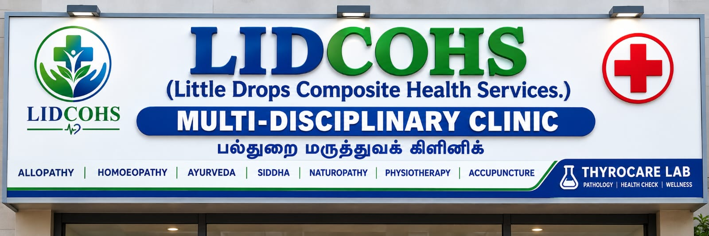

AYUSH OPD
9:30 AM – 1:30 PM
- Mon & Thu: Ayurveda
- Tue & Fri: Homoeopathy
- Wed & Sat: Siddha
- Sunday: Naturopathy (by appointment)
Little Drops Composite Health Services
Care Beyond the Cure
Multi-Disciplinary Community Healthcare
Compassionate, affordable and accessible healthcare — different systems of medicine and allied services together under one roof in Selaiyur, Tambaram.

Why LIDCOHS?
Every recognised system of medicine has its own strengths and scope. At LIDCOHS, patients are properly informed about the options appropriate for their condition — instead of travelling from place to place in search of different services.
Symptoms, history, medications and clinical findings are understood before anything else.
Which consultation, which system, whether investigations are needed — explained clearly.
If one approach isn't suitable, you are guided to the right professional or higher centre.
Emergencies are directed to appropriate emergency medical care without delay.
One Roof. Multiple Healthcare Options.
A multi-disciplinary model gives you access to different healthcare professionals and systems according to your needs. When one approach may not be suitable, you are guided towards the right qualified professional — or a higher centre when necessary.
Less running around. More coordinated care.
Allopathy plays an essential role in emergencies, acute illness and critical care. AYUSH systems can have an important role in supportive care, wellness, rehabilitation and selected chronic concerns. You receive appropriate guidance — not a restriction to one approach.
For those who cannot travel, doorstep consultation is available by prior arrangement — with follow-up and referral arranged as required. Not a substitute for emergency care.
Our Services
9:30 AM – 1:30 PM
5:30 PM – 9:00 PM
Evening consultation for general healthcare, acute illnesses, chronic conditions and appropriate medical management — with referrals when needed.
Afternoon sessions
Rehabilitation, pain management and acupuncture during the afternoon session, by prior appointment.
Prescription-based dispensary for medicines prescribed by qualified healthcare professionals.
A wide range of lab investigations at competitive prices with applicable discounts.
Quality • Reliable Reports • Timely • Affordable
Guidance, follow-up and referral arranged at home for those who cannot travel — subject to availability.
Timings
| Day | AYUSH OPD 9:30 AM – 1:30 PM | Allopathy OPD 5:30 PM – 9:00 PM | Physio / Acupuncture |
|---|---|---|---|
| Monday | Ayurveda | ✔ General | By appointment (afternoon session) |
| Tuesday | Homoeopathy | ✔ General | |
| Wednesday | Siddha | ✔ General | |
| Thursday | Ayurveda | ✔ General | |
| Friday | Homoeopathy | ✔ General | |
| Saturday | Siddha | ✔ General | |
| Sunday | Naturopathy (by appointment) | — | Community Programmes 10:00 AM – 1:00 PM |
Our Clinic
A look at our spaces and facilities. Drop photos into image/gallery/ to update this automatically.



image/gallery/reception.jpgimage/gallery/lab.jpgOur Service Philosophy
LIDCOHS is a service-oriented healthcare initiative with the patient at the centre of our work. We do not want healthcare to become merely a numbers-driven activity.
Community Healthcare
Every Sunday | 10:00 AM – 1:00 PM
By appointment, during Sunday community sessions.
Screening and basic health checks for the community.
Free awareness programmes and community health education.